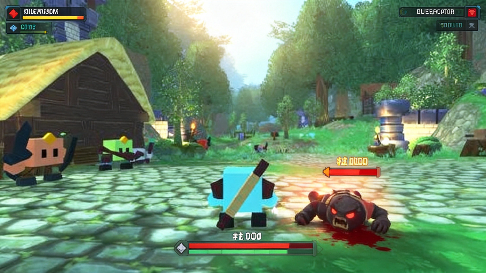
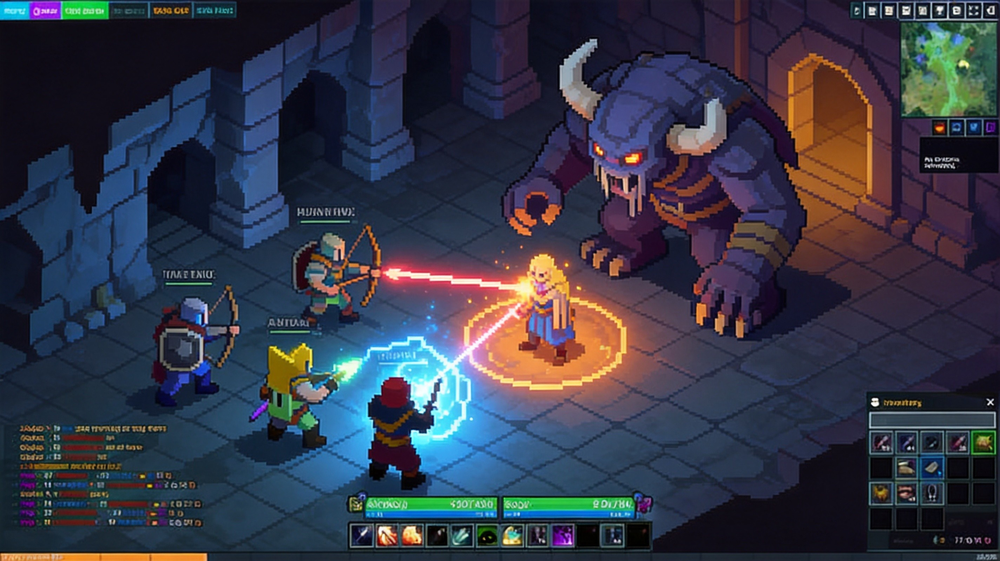

Hordes.io is a free-to-play 3D browser MMORPG that puts you in a fantasy world with four distinct classes. Whether you want to tank damage as a Warrior, rain arrows as an Archer, unleash devastating spells as a Mage, or keep your team alive as a Shaman, there's a playstyle for everyone. Trust me, once you understand each class's strengths and skill combos, you'll dominate both PvE and PvP.
Here's the thing — most new players pick a class based on looks alone, then struggle because they don't understand the skill rotations. This guide breaks down every class's abilities, optimal combos, and PvP tactics so you can hit the ground running.
🎯 Game Basics
Hordes.io drops you into a persistent 3D world where you fight monsters, complete quests, and battle other players. The core loop is straightforward: kill enemies → gain XP → level up → unlock skills → tackle harder content.
What makes Hordes.io stand out from other .io games is the MMO progression system. Your character keeps growing, and the four-class system means team composition actually matters. You can't just solo everything — you need Warriors to tank, Mages for burst damage, Archers for sustained DPS, and Shamans to keep everyone alive.

- Start by killing low-level monsters near spawn to level up safely
- Join a party early — XP gains are shared and you learn class synergy
- Don't spend skill points until you read the full class breakdown below
🎮 Controls
Hordes.io uses standard MMORPG controls that'll feel familiar if you've played any action RPG:
| Action | Control |
|---|---|
| Move Character | WASD Keys |
| Camera Rotation | Mouse Movement (Hold Right Click) |
| Basic Attack | Left Click |
| Skill 1-4 | 1, 2, 3, 4 Keys |
| Ultimate Skill | R Key |
| Interact / Talk to NPC | E Key |
| Inventory | I Key |
| Character Stats | C Key |
| Party Menu | P Key |
| Chat | Enter Key |

⚔️ Classes Guide
Hordes.io features four distinct classes, each with unique skills and roles. Here's the complete breakdown based on official game data:
🛡️ Warrior (Tank / Melee DPS)
Role: Frontline tank with high survivability and melee damage
Strengths: High HP, strong defense, can protect teammates
Weaknesses: Slow movement, vulnerable to being kited by ranged classes
| Skill | Effect |
|---|---|
| Taunt | Forces enemies to attack you + heals HP over time. 19s cooldown, 10s duration. |
| Charge | Dashes toward a distant target, closing the gap on ranged enemies. |
| Shield Bash | AOE melee attack that hits all nearby enemies. |
| Bulwark | 10s defensive stance with massively increased damage reduction. |
Charge → Taunt → Shield Bash → Basic Attacks → Bulwark (when low HP)
🏹 Archer (Ranged DPS)
Role: Sustained ranged damage dealer with high burst potential
Strengths: Excellent DPS, mobile, strong single-target damage
Weaknesses: Fragile up close, needs positioning awareness
| Skill | MP | Cast | CD | Effect |
|---|---|---|---|---|
| Swift Shot | 2 | 1.5s | - | 29.5 damage quick shot |
| Precise Shot | 5 | 1.7s | - | 54 damage (core skill) |
| Dash | 6 | - | 10s | Reposition + reset Precise Shot for instant cast |
| Volley | 21 | - | 25s | AOE frontal cone with sustained damage |
| Serpent Arrows | - | - | - | Passive: Precise Shot chains to 3 targets (27.5% damage each) |
| Vampiric Arrow | 2 | - | 20s | 33 damage + 120 HP heal + interrupt |
| Bone Shot | 11 | 2.8s | 10s | 134 damage, +50% vs targets below 50% HP |
| Poison Arrows | - | - | - | Passive: DOT + slow effect |
| Invigorate | - | - | 50s | Restore 8% MP + 17s attack speed + 9% damage buff |
| Blinding Shot | 2 | - | 25s | 3s blind effect on target |
Invigorate → Precise Shot → Dash → Precise Shot (instant) → Swift Shot → Bone Shot (execute)
🔮 Mage (Magic DPS / Crowd Control)
Role: Burst damage and crowd control with ice magic
Strengths: High burst damage, excellent crowd control, AOE capabilities
Weaknesses: Squishy, mana-hungry, skillshot-dependent
| Skill | MP | Cast | CD | Effect |
|---|---|---|---|---|
| Ice Bolt | 3 | 1.5s | - | 36 damage, applies freeze stacks (5 stacks = stun + 50% damage taken) |
| Chilling Radiance | 4 | - | 25s | AOE 18 damage over 6s + crit buff |
| Shatterfrost | 3 | 2.8s | 10s | 134 damage, extra damage vs frozen targets |
| Teleport | 4 | - | 12s | Instant blink 12 meters (escape or reposition) |
| Ice Shield | 5 | - | 60s | Blocks 4 incoming attacks |
| Frostcall | 2 | Channeled | 6s | AOE blizzard damage (channel to maintain) |
| Icicle Orb | 10 | 1.5s | 8s | 68 damage projectile, pierces and damages all targets in path |
| Ice Block | 5 | - | 80s | 5s complete immunity + HP regen (but can't move/attack) |
| Hypothermic Frenzy | - | - | 45s | 12s buff: +10% attack speed + 10% damage |
Stack freeze with Ice Bolt before using Shatterfrost for maximum damage. Use Ice Block defensively when focused in PvP.
Ice Bolt (apply freeze) → Frostcall (channel for max damage) → Shatterfrost (burst on frozen target) → Hypothermic Frenzy (sustained DPS)
💚 Shaman (Healer / Support)
Role: Primary healer with sustained healing and team support
Strengths: Massive sustained healing, extremely difficult to kill, essential for team content
Weaknesses: Low damage output, dependent on teammates for kills
The Shaman excels at keeping the party alive through prolonged fights. While your damage numbers won't impress anyone, a good Shaman is the reason teams survive boss fights and win PvP battles. Trust me, every experienced player knows the value of a skilled healer.
Your job isn't to kill — it's to make sure your team doesn't die. Position safely, prioritize heals on the tank, and stay alive at all costs. A dead healer is useless.
🏆 PvP Combos & Rotations
PvP in Hordes.io is where class mastery really shines. Here are the optimal combos for each class in player-versus-player combat:
Rotation: Charge → Taunt → Shield Bash → Auto-attacks → Bulwark (when focused)
Strategy: Lock down priority targets with Taunt, then burst them down. Save Bulwark for when enemy Mages or Archers focus you.
Rotation: Invigorate → Precise Shot → Dash (reposition) → Precise Shot (instant) → Bone Shot (execute low HP targets)
Strategy: Stay at maximum range. Use Dash both for repositioning and to reset Precise Shot's cast time. Execute with Bone Shot when enemies drop below 50% HP.
Rotation: Ice Bolt (stack freeze) → Hypothermic Frenzy → Frostcall (channel) → Shatterfrost (burst)
Strategy: Build freeze stacks first for the damage amp, then unleash your burst window. Use Ice Block when the enemy Warrior engages you.
Priorities: 1) Keep tank alive → 2) Stay alive yourself → 3) Heal DPS as needed
Strategy: Position behind your team at all times. If a Warrior dives you, run to your tank. Your job is survival — damage is your teammates' problem.
💎 Pro Tips & Strategies
A balanced party (1 Warrior, 1 Shaman, 2 DPS) will always outperform a random group of 4 DPS. The Warrior holds aggro, the Shaman keeps everyone alive, and the DPS classes focus on damage. Find a consistent group and you'll clear content way faster.
Here's the thing about Archer: Dash isn't just for repositioning. It resets Precise Shot to instant cast, which is huge for burst windows. Use Dash aggressively to kite melee classes while dumping damage.
Don't just spam Shatterfrost. Build up 5 freeze stacks with Ice Bolt first — the 50% damage amplification makes your burst combo absolutely devastating. This single habit will double your damage output.
Most Warriors forget that Taunt doesn't just generate threat — it heals you over 10 seconds. Use it on cooldown during tough fights to stay healthy without needing Shaman attention constantly.
Bottom line: if you're taking damage, you're standing wrong. Shamans should always be behind the Warrior, out of enemy attack range. If a melee class reaches you, Teleport (or run) back to safety immediately.
Mage players often treat Ice Block as a panic button, but it's also a free heal window. When you're low on HP, pop Ice Block to become invulnerable for 5 seconds while regenerating health. It's a clutch move in extended fights.
❓ Frequently Asked Questions
What's the best class for solo play in Hordes.io?
Archer is generally the strongest solo class due to high sustained damage and mobility. You can kite most enemies and don't need a party to level efficiently. Mage is also viable but more mana-intensive.
How do I level up quickly?
Join a party early on — shared XP with a balanced team means faster kills and more experience per hour. Focus on killing enemies slightly above your level for bonus XP. Avoid spending too much time on quests if there are dense enemy spawns nearby.
Is Hordes.io free to play?
Yes, Hordes.io is completely free to play in your browser. There are optional cosmetic purchases, but all gameplay content is accessible without spending money.
What's the max level in Hordes.io?
The level cap is currently 50. Most players reach max level within a week of active play, especially with a consistent party.
Can I change my class after choosing?
Currently, class changes are not available. Choose wisely based on your preferred playstyle. If you're unsure, Archer is the most versatile and forgiving for new players.
How do I join a party?
Open the Party menu (P key) and either create a new party or request to join an existing one. You can also use the global chat to find groups for specific content. Most players are welcoming to newcomers.
📝 Conclusion
Hordes.io offers surprisingly deep class gameplay for a browser MMORPG. Each class has a distinct identity and viable playstyle, and team composition genuinely matters. Whether you prefer the frontline action of a Warrior, the precision of an Archer, the burst potential of a Mage, or the support role of a Shaman, there's something for everyone.
The key to success is understanding your class's skill rotation and knowing when to use defensive abilities. Master the combos above, find a good party, and you'll be clearing endgame content in no time.
Ready to dive in? ⚔️ Play Hordes.io Now